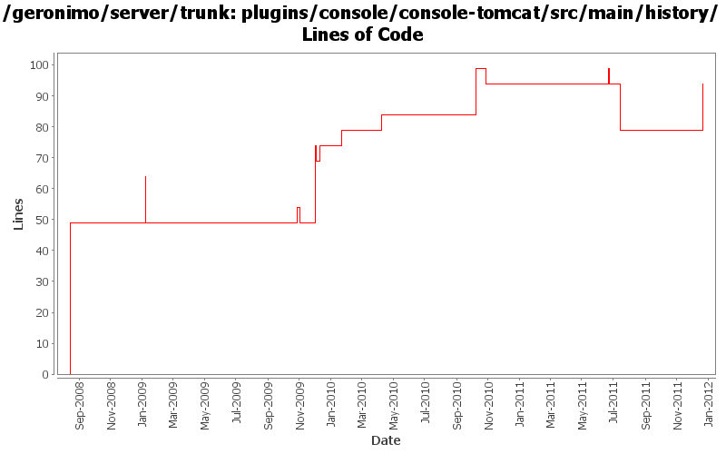

[root]/plugins/console/console-tomcat/src/main/history

| Author | Changes | Lines of Code | Lines per Change |
|---|---|---|---|
| Totals | 20 (100.0%) | 167 (100.0%) | 8.3 |
| djencks | 8 (40.0%) | 119 (71.3%) | 14.8 |
| rickmcguire | 4 (20.0%) | 20 (12.0%) | 5.0 |
| dwoods | 3 (15.0%) | 16 (9.6%) | 5.3 |
| genspring | 3 (15.0%) | 10 (6.0%) | 3.3 |
| xuhaihong | 1 (5.0%) | 2 (1.2%) | 2.0 |
| rwonly | 1 (5.0%) | 0 (0.0%) | 0.0 |
GERONIMO-6240 Modify configs so that they use features as the bootstrap, and fix a few compile and test errors. Servers build but do not fully start
15 lines of code changed in 1 file:
Update dependencies.xml file, including bval and commons-jexl changes
2 lines of code changed in 1 file:
GERONIMO-5586 Modified the previous code logic so that it can work and add the ability to install library cli
0 lines of code changed in 1 file:
GERONIMO-5674 Dojo related improvement. Patch from Xiao Yi to replace the full dojo with a customized dojo.
1, DojoHowToCompress/**/* files are the build script to build geronimo customized dojo.
2, dojo/**/* files are the customized dojo files for geronimo.
3, dojo-tomcat and dojo-jetty modules are removed.
4, customized dojo files are put into console-portal-driver webapp so that other jsp can reference the dojo
files with /console/dojo/xxx
5, also updated all dojo references in all jsps to the new dojo location.
0 lines of code changed in 1 file:
changed dependencies.xml after a clean build.
5 lines of code changed in 1 file:
switch to released version of activemq
0 lines of code changed in 1 file:
GERONIMO-5230 Add Bean Validation Support to the connector 1.6 implementation.
Changes to Geronimo base.
15 lines of code changed in 1 file:
GERONIMO-5242 Make spec version naming conventions consistent.
Updating trunk to new spec numbering rules.
5 lines of code changed in 1 file:
The admin console is depending on dojo because of the new navigation tree. --- the dojo dependencies should be added to console-tomcat/jetty instead of plugin-console-tomcat/jetty
5 lines of code changed in 1 file:
GERONIMO-4980 Try to finish some more of the tomcat6 to tomcat7 upgrade
1 lines of code changed in 1 file:
GERONIMO-4965 Get pluto 2 running as osgi blueprint service. Base console sort of works. Fix a bug in jetty single-bundle-ear support for locating resources
5 lines of code changed in 1 file:
use bundleized dwr. Start trying to not use spring in pluto. Mysterious linkage error building console-tomcat
2 lines of code changed in 1 file:
fix problem in EarConfigBuilder when constructing sub-configurations for wars. Rename DeploymentContext.getBundle to getDependencyBundle to try to make it clearer that it is temporary and not always available. Start updating pluto/console stuff for pluto 2.
25 lines of code changed in 1 file:
fix up of the system-database plugin
0 lines of code changed in 1 file:
GERONIMO-4658 Editor for artifact aliases. original patch from Victor Fang, with modifications. Merge from 2.2 with little attempt to fix problems
5 lines of code changed in 1 file:
update other XML files with embedded versions from 2.2-SNAPSHOT to 3.0-SNAPSHOT
1 lines of code changed in 1 file:
GERONIMO-4692 sort dependencies.xml, except for connector-1_6
17 lines of code changed in 1 file:
GERONIMO-4484 Extraction, localization and display of messages generated in portlets. Applied common-message-plugin.patch from Gang Yin, along with removing Tomcat API depends introduced in early patch.
0 lines of code changed in 1 file:
GERONIMO-4484 Extraction, localization and display of messages generated in portlets. Applied common-message-base.patch and common-message-core.patch from Gang Yin, with some minor updates.
15 lines of code changed in 1 file:
GERONIMO-4248 Add dependency history files
49 lines of code changed in 1 file: